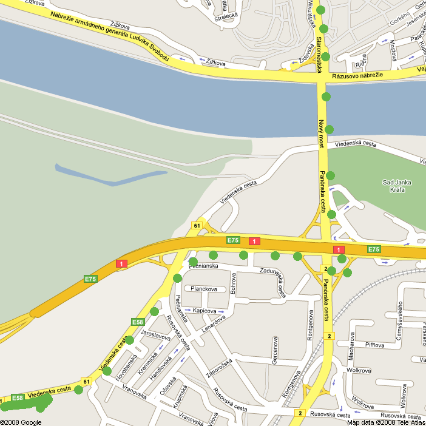
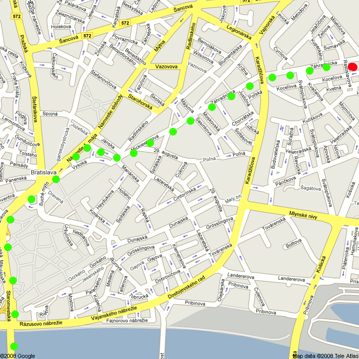

sk
skTake the highway richtung Bratislava || Budapest Leave highway at Fischamend go left ;-) richtung Hainburg, Bratislava go streight, through Hainburg, after Wolfsthal are the Austria/Slovakia borders You will come to "Viedenska cesta" then follow the green spots until you come to the red one ;-)

"If you ever find you need help again, you know, if you're in trouble, need a hand out of a tight corner ..." "Yeah?" "Please don't hesitate to get lost." ;-) PS +436648569115